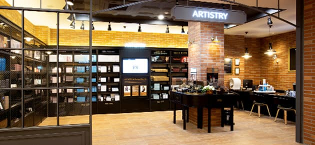
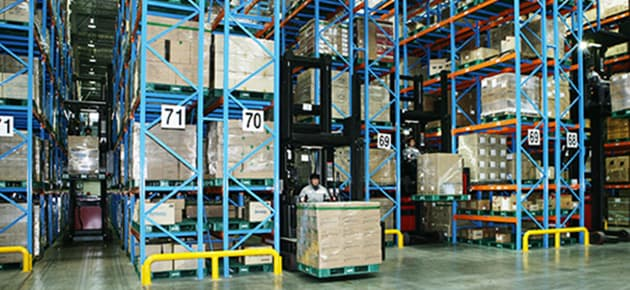

한국암웨이는 강남, 강서, 분당, 인천, 대전, 청주, 광주, 전주,
대구, 울산, 창원, 부산, 강릉, 제주에 14개의 암웨이 비즈니스 &
브랜드 센터 (Amway Business & Brand Center)를 운영하고 있습니다.
전국 14곳에 이르는 암웨이 비즈니스 & 브랜드 센터는 1991년
한국암웨이 본사 오픈과 동시에 영업을 시작한 양재/화곡동 픽업
센터가 ABO와 고객 여러분에게 보다 나은 서비스와 환경을 제공하기
위해 끊임 없는 변화와 혁신을 거듭한 결과입니다. ABO와 고객
여러분을 위해 다양한 서비스를 제공하는 것은 물론, 단순한
쇼핑공간이 아닌 '회사-ABO-소비자'가 상호 교류하며 회사와
비즈니스, 제품과 브랜드를 모두 만나는 복합 비즈니스 솔루션
센터의 역할을 함께 수행하고 있습니다.

부산 아시아 물류 허브 센터
한국암웨이가 지난 2011년 부산에 설립한 아시아 물류 허브센터는
전 세계에서는 세 번째로, 아시아에서는 처음 설립된 물류 기지 입니다.
아시아 물류 허브 센터는 미국 본사에서 제품을 들여와 조립, 라벨링,
재포장 및 배송에 이르는 작업 과정을 거쳐 일본과 중국, 홍콩, 대만 등지로 수출하고 있습니다.
이 센터는 명실공히 암웨이의 글로벌 3대 물류 축의 하나로 충실히
기능하고, 사업 영역을 확장해 부산의 고용과 경제 활성화에
큰 역할을 수행하고 있습니다.